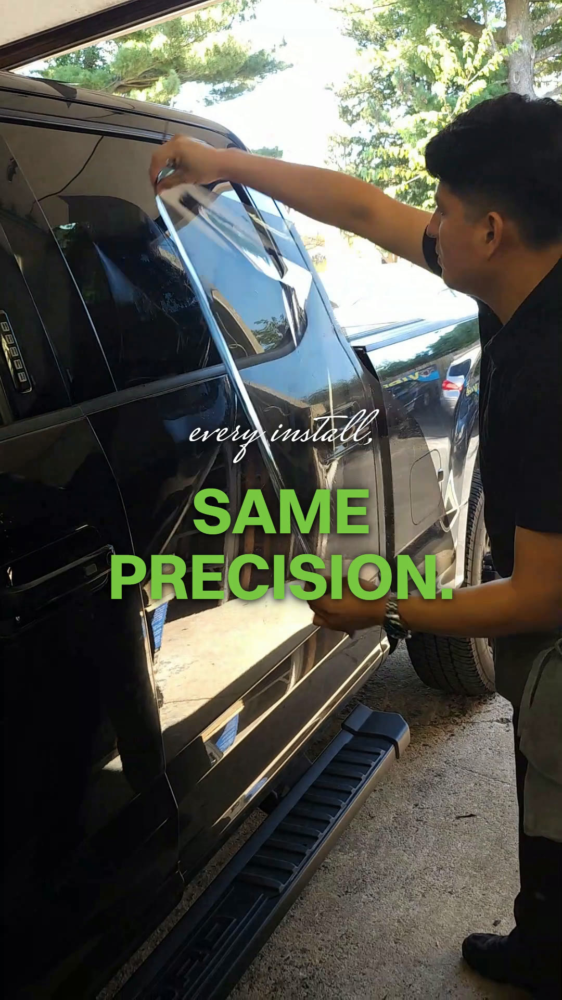
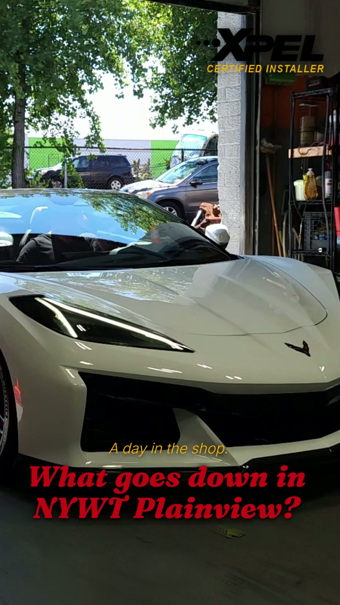
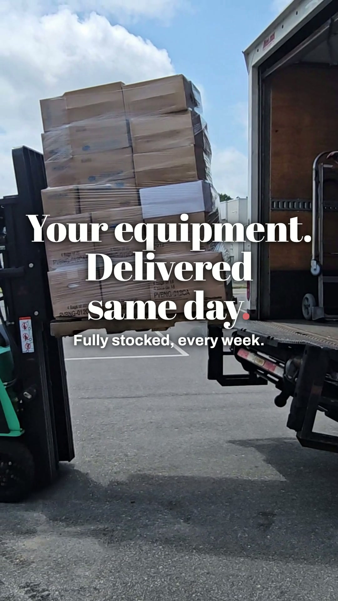

REAL WORK. REAL BUSINESSES. NO STOCK PHOTOS.
Content that builds trust. Sites that build credibility. Proof you can watch for yourself.



WEBSITES I'VE BUILT
Your customers are searching Google, Maps, and AI tools like ChatGPT before they ever call. I build the websites, content, and campaigns that make sure they find you first.
WHAT I DO
No account managers, no juniors touching your account. Every deliverable comes from me, directly.
SERVICE 01
Show up in Google, Google Maps, and now ChatGPT, Perplexity, and AI Overviews. It's not just search results anymore.
SERVICE 02
I show up on-site, film it myself, and edit it into Reels that actually get watched. No stock footage, no AI slop.
SERVICE 03
Custom-built, fast, and yours. Not a $30/month template you're renting from Wix forever.
EVERYTHING ELSE I HANDLE
Campaigns built to spend your budget on customers, not on guesswork.
Speed-to-lead systems that respond before your competitor sees the notification.
The map pack is where local buying decisions happen. I make sure you're on it.
Single-offer pages built for one campaign, one goal, no distractions.
THE REAL PROBLEM
Word of mouth is the best lead you'll ever get, but it's also the one you control the least. It only shows up on its own schedule, not yours.
Meanwhile, the customer who doesn't already know you is Googling you, checking your reviews, and now asking ChatGPT and Google's AI Overviews who's actually good at what you do, all before they ever pick up the phone. If you're not showing up in those places, the referral you're waiting on doesn't matter. You don't exist to everyone else.
If your best month and your worst month are six weeks apart, the problem isn't your work. It's that nobody can find it.
REAL WORK. REAL BUSINESSES. NO STOCK PHOTOS.



WEBSITES I'VE BUILT
THE CENOVATE DIFFERENCE
I pair the speed of AI-powered tools with judgment you only get from doing the actual work, because growing a business takes both.
AI-driven workflows, automation, and real data give me the speed and precision to grow your business fast, without losing what makes it worth choosing.
Storytelling, on-site filming, and brand instinct are what separate forgettable content from the work people actually remember.
The businesses winning right now aren't just running ads. They're running systems.
HOW I WORK
No two businesses are the same, but the path I take to get you results is. Here's exactly how it works.
01
Where I Start
I dig deep into your current presence, competitors, and real market opportunity, so I know exactly where the growth is hiding before I touch anything.
02
Where It Gets Built
I build a custom plan around your goals, audience, and budget: SEO, content, lead gen, web performance. Not a generic template.
03
Where It Goes Live
I implement across every channel: optimizing the site, building content, improving rankings, launching lead gen. Strategy becomes results here.
04
Where It Compounds
I track what's actually working, then refine and scale it. Nothing here is set-and-forget. It gets sharper the longer we work together.
WHY IT WORKS
01
SEO, GEO, content, ads, web design: I don't hand you off to a different specialist for each piece. It all comes from the same person who actually studies your business, start to finish.
02
I'm not running the same SEO playbook from five years ago. Your customers are searching Google, Maps, and now AI tools like ChatGPT before they ever call, and I build for all of it, not just the old rules.
03
Your strategy is built around your actual business, not a one-size-fits-all package. And you're talking to me directly, not an account manager relaying messages.
04
No office, no sales team, no three layers of management to pay for. Just the work, at half of what an agency charges.
THE FREE AUDIT
Let's face it: marketing is tough. There are a lot of moving parts, and it's hard to know where to actually focus. In your free audit, I'll show you exactly where you show up when people nearby search for what you do, how you stack up against the businesses next door, and where you're leaving money on the table. No cost, no obligation.
No one is going to obsess over your success as much as I do.
Get My Free Marketing Audit